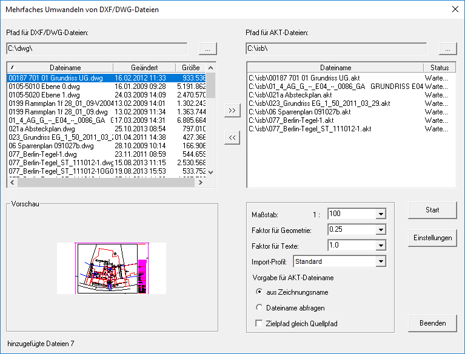

Windows-Startmenü → Programmgruppe ISBCAD 2026 → Hauptmenü → DXF/DWG Import.
Umwandlung einer oder mehrerer DXF- und DWG-Dateien in das GLASER ISBCAD AKT-Format. Öffnet den Dialog Mehrfaches Umwandeln von DXF/DWG-Dateien.
Es können beliebig viele Dateien in einem Zuge umgewandelt werden. Da dies mit einem Import-Profil geschieht, sollten Sie nur Quelldateien vom gleichen Hersteller zusammenfassen. Wir empfehlen, über die Funktion [Datei | Import] im Zeichenprogramm zunächst nur eine Datei zu konvertieren und dabei ein genau definiertes Import-Profil zu erstellen. Dieses Import-Profil kann dann für weitere Dateien angewendet werden.
Falls Sie den Faktor der Zeichenelemente bereits bei der Vorschau korrigieren möchten, nutzen Sie ebenfalls die Import-Funktion im Konstruktionsprogramm.
» DWG/DXF Dateien importieren
Unterschiede zwischen DXF/DWG-Import im Hauptmenü und im Zeichenprogramm:
Hauptmenü |
Zeichenprogramm |
|---|---|
·Sie können mehrere Dateien aus unterschiedlichen Ordnern umwandeln und anschließend einlesen ·Sie können den Modellbereich importieren ·Die Überprüfung des Faktors können Sie erst nach dem Einlesen der Zeichnung vornehmen |
·Sie können nur eine Zeichnung importieren ·Sie können entweder den Modellbereich oder ein Layout importieren ·Eine Vorschau ermöglicht Ihnen die Korrektur des Faktors, Wahl der Stifte und aller weiteren Parameter ·Sie können ein Musterprofil für den Import aus dem Hauptmenü erzeugen |
Optionen im Dialog "Mehrfaches Umwandeln von DXF/DWG-Dateien"
 |
Pfad für DXF/DWG-Dateien
Verzeichnis, in dem die umzuwandelnden DXF- oder DWG-Dateien liegen.
|
Öffnet die Verzeichnisauswahl. Sie können über diese Schaltfläche aus mehreren Ordnern die Quelldateien zusammenstellen. |

Dateiliste
In diesem Feld werden alle Zeichnungsdateien (*.DXF bzw. *.DWG) aufgelistet, die sich in diesem Ordner befinden. Mehrfachauswahl mittels Strg + A, Umschalt + LM oder Strg + LM möglich.
Überträgt die in der Dateiliste markierten Dateien in das Verzeichnis für die AKT-Dateien. Jede DXF/DWG-Datei kann nur einmal in die Liste der AKT-Dateien übernommen werden. |
|
Entfernt die in der Dateiliste markierten Dateien aus der Liste. |
Vorschau
Wenn es zu der markierten Datei eine Vorschau (Bitmap) gibt, wird sie hier dargestellt.
Pfad für AKT-Dateien
Verzeichnis, in dem die bei der Umwandlung erzeugten AKT-Dateien gespeichert werden sollen.
Nur aktiv, wenn die Option Zielpfad gleich Quellpfad (s. unten) deaktiviert ist.
|
Öffnet die Verzeichnisauswahl. |
Dateiliste
In diesem Feld werden alle Zeichnungsdateien (*.DXF bzw. *.DWG) aufgelistet, die sich in diesem Ordner befinden. Mehrfachauswahl mittels Strg + A, Umschalt + LM oder Strg + LM möglich.
Maßstab
Dies ist der Maßstab der späteren AKT-Datei. Geben Sie einen Maßstab ein oder öffnen Sie mit  eine Auswahl und wählen Sie den entsprechenden Maßstab.
eine Auswahl und wählen Sie den entsprechenden Maßstab.
Faktor für Geometrie
Hierbei handelt es sich um den entscheidenden Wert für die Umrechnung der Koordinaten aus der DXF/DWG-Datei in das ISBCAD AKT‑Format.
Die Ermittlung des Faktors erfolgt am besten über den Befehl [Datei | Import] im Allgemeinen Konstruktionsprogramm.
Faktor für Texte
Für den Fall, dass die Texte nicht mit dem Faktor für Geometrie gekoppelt sind, können Sie so die Größe der Texte anpassen.
Import-Profil
Es können beliebig viele Profile gespeichert werden. [Einstellungen | Import-Profile] Wählen Sie eines davon aus. Es wird auf alle Dateien angewendet.
Vorgabe für AKT-Dateiname
Auswahl, wie die beim Umwandeln erzeugten AKT-Dateien benannt werden sollen.
aus Zeichnungsname |
Alle gewählten Dateien erhalten den jeweiligen Zeichnungsnamen mit der Dateiendung *.AKT. |
Dateiname abfragen |
Für jede Datei wird separat ein Dateiname abgefragt. |
Zielpfad gleich Quellpfad |
Ein Haken in der Checkbox bewirkt, dass die ISBCAD Dateien in den Ordnern gespeichert werden, in denen sich auch die DXF/DWG‑Dateien befinden. |
Startet die Umwandlung.
Nach vollständiger Umwandlung wird in der Dateiliste unter Status "Fertig" angezeigt.

Öffnet den Dialog Einstellungen.
Optionen im Dialog "Einstellungen"
Konfiguration der Attribute beim Import von AutoCAD-Dateien.
Um ein Attribut zu ändern, klicken Sie in der Tabelle das entsprechende Element an und wählen Sie aus der Dropdown-Liste die gewünschte Einstellung.

Das Programm schlägt die Stiftnummer anhand der AutoCAD-Farbe automatisch vor. Ab Farbe 33 wird immer Stift 1 vorgeschlagen. AutoCAD Farbe Es werden aus allen gewählten Dateien die gefundenen Farbnummern angeboten. ISBCAD Stiftnummer Ändern Sie die Stiftnummer so, dass in den ISBCAD Zeichnungen die „richtigen“ Strichbreiten erzeugt werden. Import? Eintrag importieren? ( Wenn Sie ein vorhandenes Import-Profil benutzen, sind die Einstellungen schon von Ihnen vorgenommen worden. Änderungen sind dann erforderlich, wenn zusätzliche Farbnummern gefunden werden. |


AutoCAD Linienart Gefundene Linien, alphabetisch sortiert. Muster/Beschreibung Wenn für Linienarten Beschreibungen und/oder Muster vorliegen, werden diese hier aufgeführt. ISBCAD Strichtyp Wenn keine Übereinstimmung zwischen den AutoCAD-Namen und den ISBCAD Namen besteht, wird vom Programm der erste Linientyp DURCHG vorgeschlagen. Sonst wird ein bekannter Strichtyp gewählt. Import? Eintrag importieren? ( |
AutoCAD Layer Die Liste enthält die Layer aus allen Dateien. Farbe Zur Information wird die dem Layer zugeordnete Farbe angezeigt. Linientyp Der dem Layer zugewiesene Linientyp wird angezeigt. Linienstärke Die im Layer verwendete Strichbreite wird angeschrieben. ISBCAD Folien Die Layer werden automatisch, bei Namensgleichheit, entsprechenden Folien zugeordnet. Zum Ändern klicken Sie auf die gewünschte Zeile, diese wird markiert und das Feld für ISBCAD Folien wird zum Auswahl- und Eingabefeld. Tragen Sie hier den Namen der neuen Folie ein, eine freie Foliennummer wird automatisch vergeben. Import? Eintrag importieren? ( |
AutoCAD Font In der Tabelle werden die in den Zeichnungen benutzten Schriftarten angezeigt. ISBCAD Font Wählen Sie die gewünschten Schriftarten aus. Import? Eintrag importieren? ( |
AutoCAD Schraffur Alle Schraffuren aus allen Zeichnungen werden erfasst. Wenn möglich, wird in einem Bildchen die Schraffur dargestellt. ISBCAD Schraffur Es wird versucht eine passende Schraffur aus der Schraff.dat zu finden. Diese wird dann in einem Kästchen abgebildet. Sie können eine Schraffur selber auswählen. Faktor Damit die Schraffur zur Geometrie passt, können Sie hier einen Faktor eingeben oder auswählen. Import? Eintrag importieren? ( Winkel Angabe des Schraffurwinkels für die ISBCAD Schraffur. Klicken Sie in die Zelle und wählen Sie einen Winkel aus. Geben Sie alternativ einen Winkel ein. |
Setzen Sie einen Haken [þ] bei den Optionen, die beim Importieren der Zeichnung berücksichtigt werden sollen. Farben
Linien
Layer
Texte
Schraffuren
Sonstiges
Protokoll
|
Verfügbare Import-Profile Auflistung aller auf Ihrem System verfügbaren Import-Profile. Das aktuell eingestellte Import-Profil wird Ihnen im unteren linken Dialogbereich. Um ein Import-Profil zu aktivieren, klicken Sie dieses in der Liste an. Klicken Sie anschließend auf Profil aktivieren und abschließend auf Übernehmen.
|

Übernimmt die vorgenommenen Einstellungen und schließt den Dialog.

Bricht die Bearbeitung ab und schließt den Dialog. Alle vorgenommenen Einstellungen werden zurückgesetzt.

Übernimmt die bisher vorgenommenen Einstellungen. Der Dialog bleibt geöffnet.